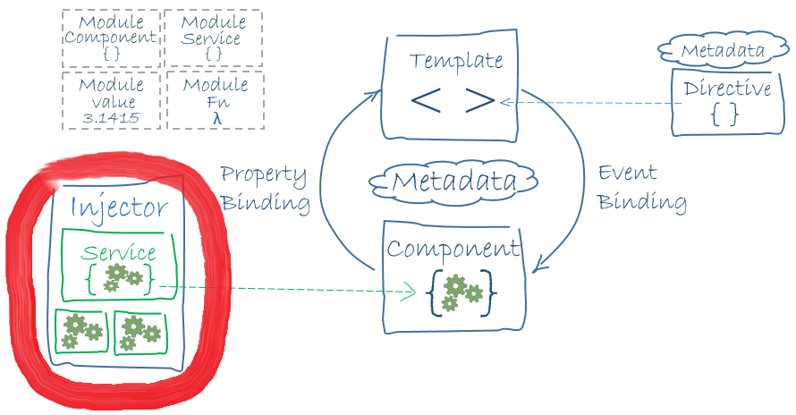
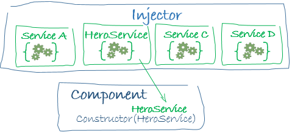
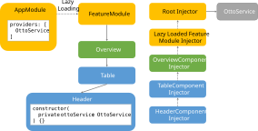

ng generate service book
import { Injectable } from '@angular/core';
@Injectable({
providedIn: 'root',
})
export class BookService {
}
@Injectable({
provideIn: 'root'
})
export class BookService {
private books: Book[] = [{...}, {...}];
findAll(): Observable<Book[]> {
return of(this.books);
}
}
provideIn: 'root'
... registers the service in the root injector.
Component consumes a service making use of the Dependency Injection
@Component({...})
export class BookOverviewComponent{
books$ = this.bookService.findAll();
constructor(private bookService: BookService) {}
}
Live Code Examples & Backup slides below
Following slides are not subject of the lecture.
Ask trainers in case of questions.


Dependency injection is a way to supply a new instance of a class with the fully-formed dependencies it requires.
Most dependencies are services. Angular uses dependency injection to provide new components with the services they need.
When Angular creates a component, it asks an injector for the services that the component requires.
An injector keeps one instance per defined service
Each component instance has its own injector. The tree of components parallels the tree of injectors.
An injector can create a new service instance from a provider
A provider is a recipe for creating a service with configuration
You can register providers in modules or in components
In general, providers are added to the root module so that the same instance of a service is available everywhere
